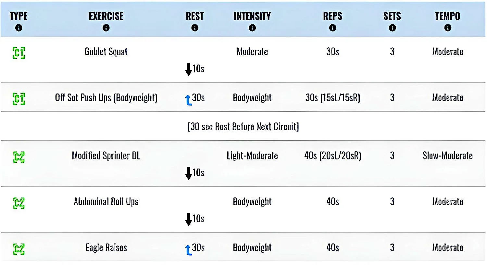
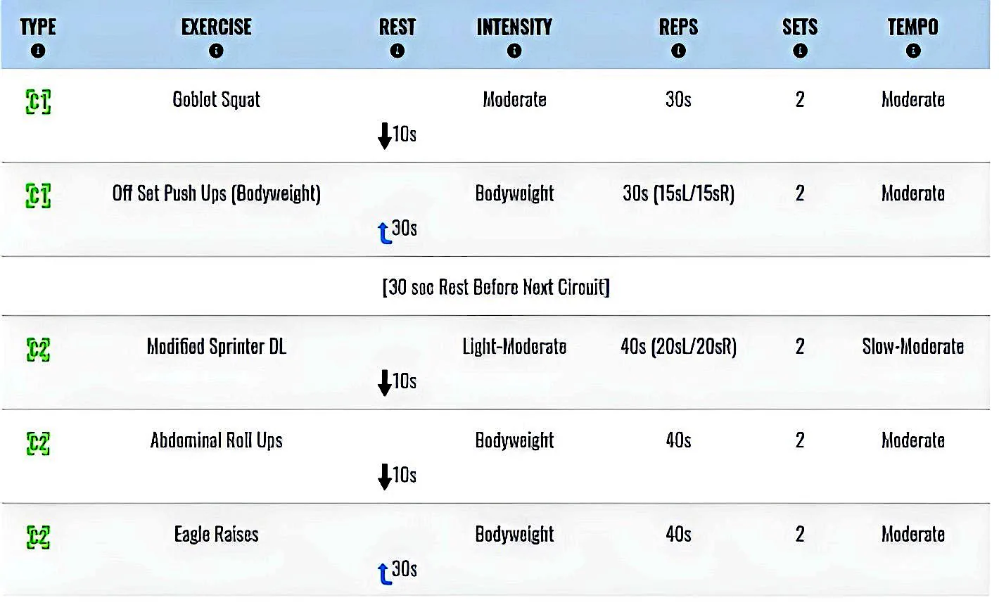
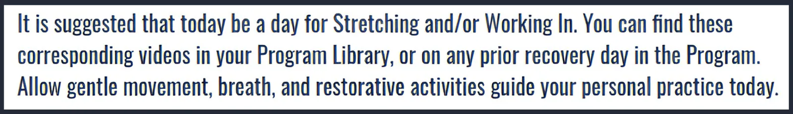

S21-E4 · The Workout Serves YOU, You Don't Serve the Workout
Hello {first_name},
It's a fact of life that we can’t give what we don’t have, or fully benefit from working out when we don’t have the energy to recover.
Movement as a whole is great for the body. Challenging training, however, I believe must be adjusted based on what is going on in your life and how you feel.
Poor night of sleep, emotional exhaustion, recovering from being sick, physically exhausted…there is so much more outside of the gym.
One of the most important principles in training is how to adjust your workouts to fit how you show up that day. I cannot overemphasize how important this personalization is if you want great results for decades.
The Quick and Easy Way to Check in With Your Body
In Kettlebell Lifestyle, I use 5 questions to help you scan your body and get real information on your training readiness for the day:
Based on your answers, your workout automatically adjusts the training volume for your session that day. I will include a snapshot below of one modified workout.
Feeling Good
 *In this example, the “sets” column shows full volume
Feeling OK

Feeling Beat Down
 *In this final example, the workout is paused ( you will have a personalized stretching program as well as active meditation option instead ) and you won’t miss a thing when you come back to training the next time
Movement everyday is medicine for your body, and adjusting how you train based on an honest assessment of how you feel is true wisdom.
Properly warming up, adequate technique covering the primary movement patterns, and cooling down are super important, but I say the skill of knowing when and how to adjust your training based on how you feel is the PRIMARY skill for training longevity.
Start checking in with yourself and adjust your training accordingly, and watch what happens ; )
Train Intentionally, Mike Salemi
In case you were curious? What Makes Kettlebell Lifestyle a Fantastic Program?
LIFETIME ACCESS to a 9 week, follow along video program. I spent months testing and tweaking these workouts and how you progress from one phase to the next. One time through is great, but repeating the program (and charting your continued progress) is even better. There are 9 weeks of training included for beginners, and 9 weeks for the intermediate level.
On Ramp Build your energy stores to set yourself up for progress while getting familiar with the platform.
Phase 1 Bring up weak points and create a strong foundation.
Phase 2 Layer in skill development with more dynamic movements to increase conditioning.
Phase 3 This phase is performance using more rotation with challenging workouts to emphasize strength, speed, mobility, coordination, strength endurance, power, and more.
Get KBL Now Use code KBRoadmap for $100 off
How is KBL Different? *These “extra” things that support the program are what set KBL apart and make the price a steal.
Video Coaching of Everything
Daily Personalization The answers to the daily 5 question training readiness assessment customizes the reps and sets for that day’s workout. You’ll get regular practice at the vital skill of personalization until it becomes second nature.
Beginner and Intermediate Track Each workout has exercises chosen for 2 levels of fitness.
2 Ways to Navigate Immersion - going through the program as I wrote it OR self-guided - navigating how you want to.
Onboarding Questionnaire Take the guesswork out of knowing whether to follow the beginner or the intermediate track.
8 Bonus Videos With Experts Subject matter experts share their perspectives on topics that will support your ability to set and achieve your fitness goals: nutrition, working in, addressing hip and shoulder restrictions, and more.
Kettlebell Selector Tool Your answers to a few questions will narrow down the suggestions from 64 possibilities to the 3 best suited to your training experience. It’s best to have several weights, but you can go through the program with just one or two.
Personalized Stretch Test Focus your time stretching on exactly the places your body needs it. This test will guide you to your tight spots and suggest a stretching protocol for you to follow. These aren’t your middle school PE stretches.
Get KBL Now Use code KBRoadmap for $100 off
|